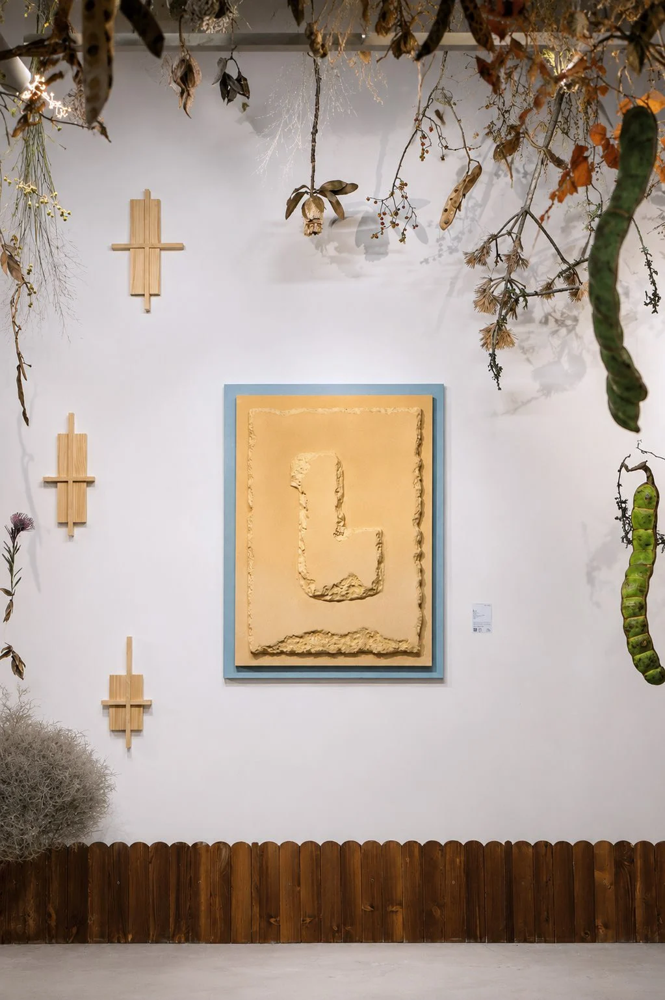
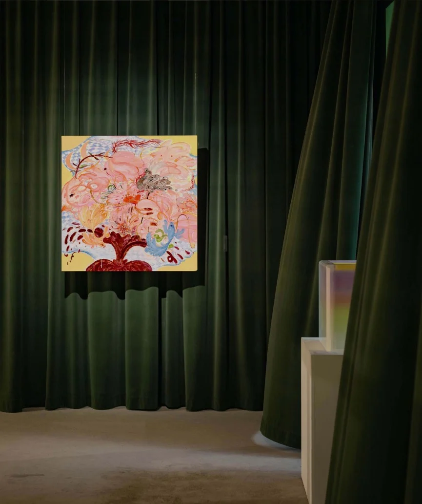

Exhibitions / 2025Spiritual Presence
Garden of All Things
万物花园

The story
A garden is not only a place. It is a way of understanding our connection to all living things.
Part of Spiritual Presence, the 2025 edition of Garden of All Things brings nature, feminine spirituality and contemporary art into conversation. Plants and shifting light become invitations to pause, look inward and encounter the poetry of everyday life.
- Artists & collaborators
- Ye Fan · Huang Maomao · Chen Nuo · Tan Kun · Chen Yiran · Jin Nü · Zhang Zhongyu
- From the archive
- The Parrot 2026 · pp. 15, 39, 40

